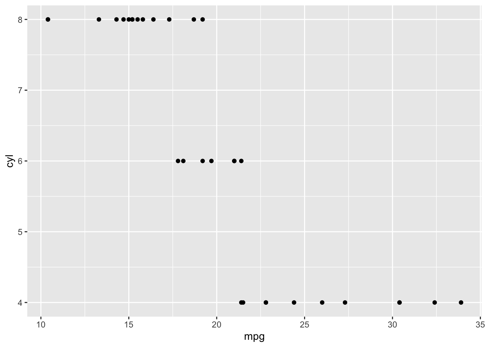
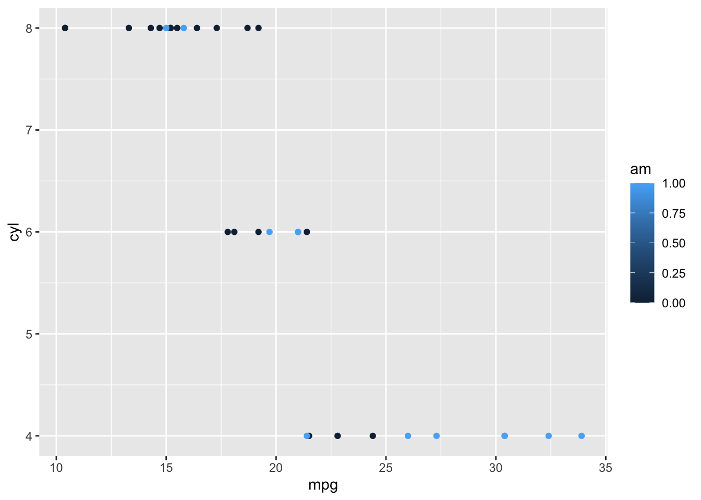
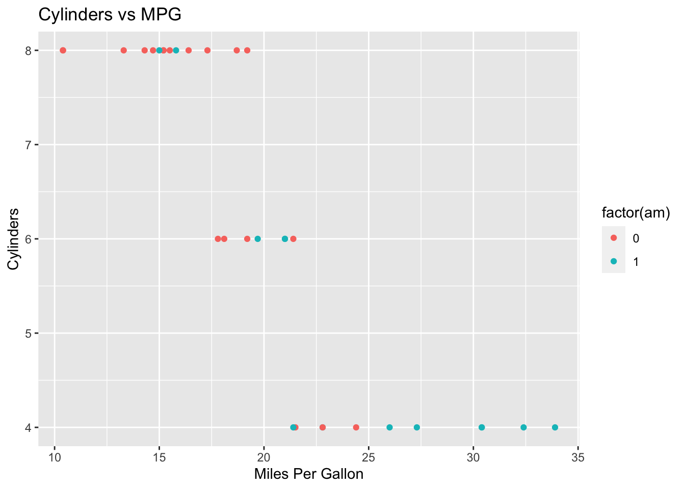
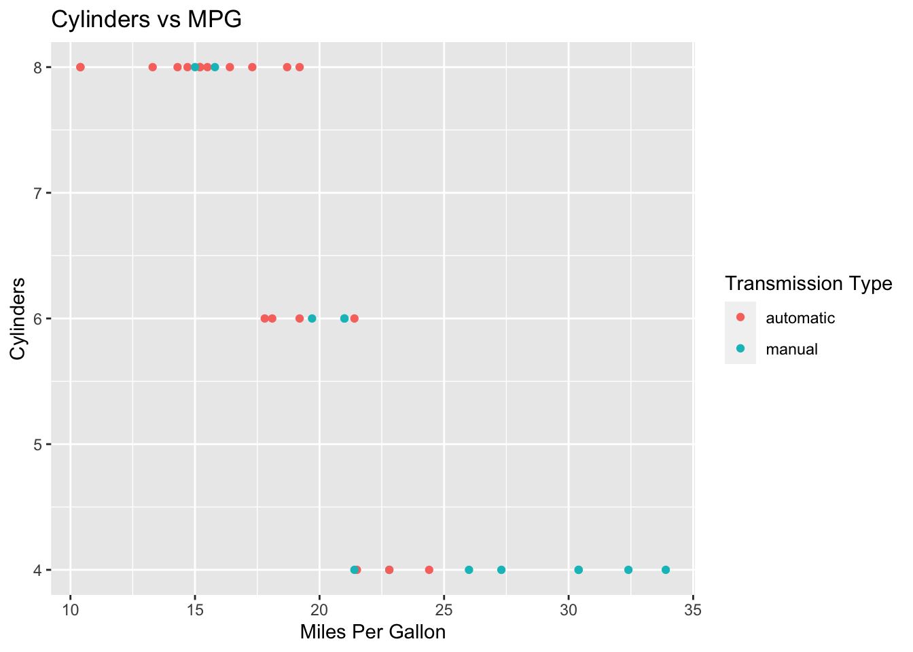
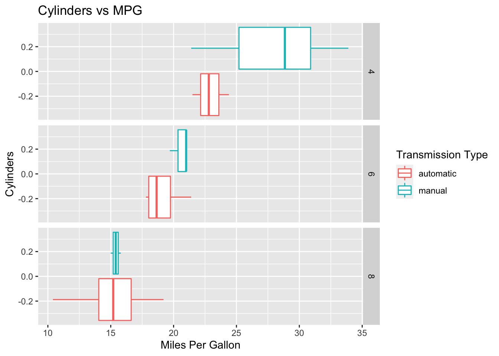

?mtcarsGetting_Started_with_Rmarkdown
Open a new document
In the upper left:
- choose R Markdown … (We’ll also use .qmd too)
- choose html
The “?“
How to get more information on a dataset in R.
Load the tidyverse

What is the tidyverse?
Hit the little green c to add a chunk
library(tidyverse)── Attaching packages ─────────────────────────────────────── tidyverse 1.3.2 ──
✔ ggplot2 3.3.6 ✔ purrr 0.3.4
✔ tibble 3.1.8 ✔ dplyr 1.0.9
✔ tidyr 1.2.0 ✔ stringr 1.4.0
✔ readr 2.1.2 ✔ forcats 0.5.1
── Conflicts ────────────────────────────────────────── tidyverse_conflicts() ──
✖ dplyr::filter() masks stats::filter()
✖ dplyr::lag() masks stats::lag()view(mtcars)Why do we load the tidyverse?
Let’s compare cylinders and gas mileage
mtcars |>
ggplot(mapping = aes(mpg,cyl))+
geom_point()
How can we make this graph clearer?
Let’s add another aesthetic, color:
mtcars |>
ggplot(aes(mpg,cyl,color= am))+
geom_point() 
Let’s add a title and change the x and y axes labels.
mtcars |>
ggplot(aes(mpg,cyl,color= factor(am)))+
geom_point()+
#scale_fill_brewer(palette = "blues") +
labs(title = "Cylinders vs MPG",x="Miles Per Gallon",y="Cylinders")
Edit the legend
mtcars |>
ggplot(aes(mpg,cyl,color= factor(am)))+
geom_point()+
scale_fill_brewer(palette = "YlOrRd") +
scale_color_discrete(name="Transmission Type",
breaks=c("0","1"),
labels=c("automatic","manual"))+
labs(title = "Cylinders vs MPG",x="Miles Per Gallon",y="Cylinders")
Let’s Facet a bit
mtcars |>
ggplot(aes(mpg,color= factor(am)))+
geom_boxplot()+
facet_grid(rows=vars(cyl)) +
scale_fill_brewer(palette = "YlOrRd") +
scale_color_discrete(name="Transmission Type",
breaks=c("0","1"),
labels=c("automatic","manual"))+
labs(title = "Cylinders vs MPG",x="Miles Per Gallon",y="Cylinders")
How do you remember all of this?
 Save this file
Save this file- Resources Tab
You try:
Make a point plot with the variables disp and hp from the mtcars data frame.
Hint 1: Copy the code from above and just make little changes.